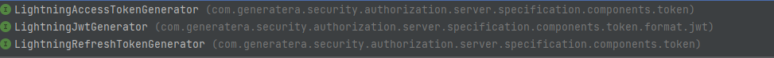

此参考文档的这一部分涵盖了此框架包含的所有基础设施的相关信息 ..
overview
当前,lightning security 仅仅包含了一些基础设施组件,其中包含了认证服务器和资源服务器的概念,本质上基于oauth2 授权规范(spring security 实现)来抽象了lightning security本身的认证设施 ..
其中模块(lightning-security-specifications)下的项目抽象了一些基础设备组件接口抽象,其中包含:
-
认证凭证询问端点
提供了对授权服务器的 AuthenticationEntryPoint的抽象(LightningAuthenticationEntryPoint) ..
-
授权或者认证异常
定义了 LightningAuthenticationException 进行认证或者授权过程中的错误记录 … 包括 LightningAuthError 记录错误信息,主要是根据oauth2 的相关类参考过来的(基本一致) ..
-
属性自动注入
-
用户属性注入的参数增强器 RequestHeaderHandlerMethodArgumentResolver,将LightningUserPrincipal的属性注入到处理器方法上的参数上(现根据spring默认的参数解析器处理之后,在进行默认增强)
-
请求头解析器 RequestHeaderHandlerMethodArgumentEnhancer,和spring 提供的不同,此解析器是进行处理器方法上的 请求参数的dto 构造之后的,可选请求头属性注入 …
-
-
服务器类型
-
授权服务器
-
应用授权服务器
-
中央授权服务器(oauth2)
-
-
资源服务器
-
包含oauth2 对应的资源服务器
-
应用对应的资源服务器
-
服务器规范此项目的基础设施遵循spring对oauth2规范的实现而学习，进行抽象,所以代码中可能包含了大量与spring security oauth2相关类文件的类似代码 …
-
授权服务器
本质上,基于oauth2 规范, 由于使用jwt 作为授权令牌: 那么会有如下通用组件-
token 生成器
-
token 授权端点(包含了用户登录端点,访问token 获取 / 刷新token 换访问token逻辑)
-
token 审查端点
-
token 撤销端点
-
jwk (jwt 令牌生成器的密钥来源)
-
providerSettings(提供者配置)
提供者配置主要提供了授权服务器的公共配置,其中包含了token端点相关的配置,例如 token 生成端点,token 销端点,以及token省查端点,这其中token撤销端点和token省查端点依赖于token令牌生成类型来条件注入为Filter(并且仅仅对 不透明token 生效) ..
java code from lightning-security-authorization-specification projectpublic class ProviderSettings extends AbstractSettings implements AuthServerProvider {
详情查看上述给定代码示例的对应java文件
-
token 配置属性列表
token配置提供器(TokenSettingsProvider)提供了token 相关的配置,例如 token令牌生成的类型,token 令牌时常,其中包含访问token和刷新token
java code from lightning-security-authorization-specification projectpublic class TokenSettingsProperties extends AbstractSettings {
详情查看对应的java文件了解详情 …
-
-
-
引导上下文(BootstrapContext)
其中你可以使用LightningBootstrapContextInitializer 初始化一些引导上下文中保留的对象,ioc容器中会默认存在一个此对象, 此对象的产生依赖于所有的 LightningBootstrapContextInitializer bean 提前初始化 ..
它本质上就是为了避免需要一些在HttpSecurity中的默认配置的bean(或者说对象),但是由于我们的授权服务器(甚至是多种授权服务器合并都会只有一个HttpSecurity对象进行过滤链的构建),所以这就在基于@Bean方法提供bean的时候,可能会存在直接依赖于HttpSecurity会重新创建此原型bean(HttpSecurity)的尴尬境地… 所以基于引导上下文可以从中获取HttpSecurity(全局共享的)来进行特定的一些bean的默认配置获取,这其中包含通过HttpSecurityUtil获取bean ,或者OAuth2LoginUtils 或者OAuth2LoginExtUtils进行特定的bean 获取并扩展注入自己的特定方面的覆盖 …
-
LightningAuthorizationService
用于保存已经授权成功的用户相关的信息,例如生成的访问token / 刷新token / 以及基于oidc规范的 id token …
同样,由于需要它进行用户相关信息(token 等信息)的持久化,那么我们需要一个 LightningUserPrincipalConverter 进行用户信息的转换以及反序列化,也就是说,默认lightning-security仅仅将信息存储在内存中,那么它使用的是 不做任何事情的转换器,但是如果需要支持数据库/ 或者例如redis,就算是使用默认的 LightningUserPrincipal实现,也需要 实现相关的转换器来支持持久化以及反序列化工作流程 …
-
还定义了一些规范
-
用户实体
在此框架中,LightningUserContext 作为当前应用中已经授权的实体(用户信息)的持有者,那么它提供了相应的方法进行当前用户信息获取并进行指定类型的强转,由于此框架仅仅作为底层基础设施,真正的授权服务器,也就是应用授权服务器(或者可以称为用户中心/ 授权中心)都会紧跟业务关联,所以它必然会基于业务来定制自己的用户实体,所以此框架仅仅提供了大体的一个壳子,用于扩展并实现属于自己业务上的授权中心 ..
其次,我们定义了用户的实体必须被LightningUserPrincipal所包装,也就是一个Authentication对象的principal最终的主体对象就是此接口的具体实现,取决于LightningUserService 给我们返回的对应的LightningUserPrincipal 实现 … 由于用户service 会参与认证或者说授权流程,所以一旦流程成功,那么返回的LightningUserPrincipal 将会被保存到 LightningAuthorizationService 中 … -
token 规范
-
-
bearer jwt token
-
opaque jwt token
-
多租户(暂时没有研究)
-
token 生成的算法
-
jws
-
-
token 生成器相关基础设施
-
LightningTokenGenerator
主要负责各种LightningToken的生成代理,其中包含了以下三种token生成器.
LightningJwt 作为 jwt 令牌的一个呈现,主要是对于使用自签名的公私密钥的Jwk提供者(JwkSourceProvider) 进行自签名jwt 生成,其次 对于ca认证的公私钥签名证书提供的(JwkSourceProvider)来说将默认使用LightningAccessTokenGenerator 进行token生成(这是根据spring-security 参考而来的) ..
其中包含了对token的定制(本质上所有token都隶属于 jwt),也就是能够进行jwt claims定制,以及对生成token的持久化保存策略
-
LightningTokenContext
包含了一些可用于用于生成token的上下文参数
-
LightningAccessTokenContext
将被 LightningAccessTokenGenerator 使用
-
LightningRefreshTokenContext
将被LightningRefreshTokenGenerator 使用
但是这些实际上都是使用的 LightningTokenClaimsContext
-
JwtEncodingContext
那么对于jwt(使用自签名公私钥证书的应用情况下),不是使用 LightningAccessTokenGenerator 生成token,而是通过 LightningJwtGenerator,并且此jwt 生成的背后支持是通过
<dependency> <groupId>com.nimbusds</groupId> <artifactId>nimbus-jose-jwt</artifactId> </dependency>
-
-
token 定制
由于全部都是基于jwt的token 生成,那么你可以对jwt claims 进行定制,主要是通过LightningJwtCustomizer 进行委托定制的 …
-
token 转换
由于在spring security中,通过SecurityContextHolder来持有认证用户的信息,那么需要将token 转换为一个 可以被SecurityContextHolder容纳的Authentication,于是我们需要将 jwt 转换为Authentication .. + 但是将jwt 转换为 用户实体信息(或者说认证信息仅仅存在于资源服务器上),因为资源服务器上需要对jwt 令牌进行反解析并转换为Authentication .. 对应的类是LightningJwtAuthenticationConverter,此类是继承了spring-oauth2-resource-server的实现子类抽象 .. 隔离spring-oauth2相关依赖的编码 .. 进而仅仅只关心lightning-security提供的基础设施 ..
-
-
-
资源服务器 目前资源服务器存在两种,但是由于我们的授权服务器是基于spring security对oauth2 的实现参考,所以其实 `lightning-oauth2-resource-server 本质上和 lightning-application-resource-server 没有什么不一样,仅仅是套了一个壳子,如果后续增加了不同的token生成策略,可能oauth2-resource-server和 application-resource-server就会分道扬镳 .. 所以用application-resource-server没有什么好处 … 可以直接使用lightning-oauth2-resource-server,并且其实本没有完全封装spring-oauth2-resource-server的东西,也就是配置属性,例如配置资源服务器所需构造jwt 解码器的 jwk source,我们可能需要配置 issuer url(也就是授权服务器的地址), 或者通过Jwk url 进行远程jwk source 拉取并产生jwt 解码器,详情查看org.springframework.boot.autoconfigure.security.oauth2.resource.OAuth2ResourceServerProperties
此外,资源服务器负责将jwt 转换为用户实体,对此lightning-security提供了 jwt claims to userPrincipal
另外,对于不透明token来说,其实同样使用上述的JwtClaimsToUserPrincipalMapper 可以实现有效的 jwt 到 claims的转换映射 ..
详情查看 LightningOAuth2OpaqueTokenIntrospector 了解更多 ..
流程 === 授权流程 - 中央授权服务器流程
+ 本质上,中央授权服务器它基于spring对oauth2规范的代码实现参考而直接扩展使用的,由于前面我们已经介绍了授权服务器共有的几大基础设施,例如token 生成器,token端点 / 审查 / 撤销端点,以及 jwk url / issuer url 以及 授权服务器提供者配置(暴露一些自己的信息,例如jwk 公钥信息 - 详情查看 ../../lightning-authorization-server-security/lightning-authorization-server-configuration/src/main/java/com/generatera/authorization/server/common/configuration/provider/metadata/AuthorizationServerMetadataEndpointFilter.java),前者同包下也包含了Jwk端点的源文件 … 这些本质上都是基于spring对oauth2 实现的参考复制,是因为资源服务器可以基于这些端点进行自身的进一步配置(例如生成jwt 解码器,校验) … + 那么由于直接基于spring对oauth2 编写的扩展,所以流程等同于spring oauth2,点击查看: spring oauth2 server的工作流程
-
应用授权服务器流程 同中央授权服务器基础设施,除了相同的配置之外,流程些许不同 .. 流程如下所示
同理,对于token信息的存储不再使用LightningAuthorizationService,而是过渡到LightningAuthenticationTokenService,避免过渡依赖 spring oauth2 .., 它们这些存储在于token生成完成之后的被对应的AuthenticationProvider 调用此服务进行存储.. 详情查看spring oauth2相关的代码或者 lightning security对应应用授权服务器的对应生成token的AuthenticationProvider 了解更多 …
配置参考 此框架仅仅作为配置一个自定义授权服务器或者资源服务器的底层设施,而不直接作为 授权服务器使用,所以提供了许多开放扩展的接口用于扩展并重构骨架代码 … 其中包含了:
-
应用授权服务器
-
token 生成器
-
访问token 生成器
-
jwt 生成器
-
LightningJwtGenerator 自定义实现
-
LightningJwtEncoder 进行 jwt 生成实现自定义(例如替换 nimbus 依赖)
-
-
刷新token 生成器
-
-
不透明token
-
JwtClaimsToUserPrincipalMapper 进行 jwt claims 信息到用户实体的一个映射 ..
Note对于授权服务器本身来说,并不需要JwtClaimsToUserPrincipalMapper,因为走完授权流程, 那么自然会形成一个 LightningUserPrincipal,所以仅仅对于资源服务器,从token中转换为需要存储在SecurityContextHolder中的Authentication中的LightningUserPrincipal 才需要 … -
LightningOAuth2OpaqueTokenIntrospector 进行不透明的token省查自定义逻辑处理 ..
-
-
整个httpSecurity 完全自定义
-
ApplicationAuthServerConfigurer 自定义(AuthTokenFilter)
-
LightningAuthenticationEntryPoint 自定义(用于响应授权信息,或者错误提示信息)
-
LightningAuthenticationTokenService 进行 token以及用户实体等信息的持久化
-
LightningAppAuthServerDaoLoginAuthenticationProvider 骨架认证提供器(可以重写认证逻辑 或者完全自定义)
-
LightningDaoAuthenticationProvider 作为最终交换用户实体信息的提供器
-
AppAuthServerForTokenAuthenticationProvider 进行token生成的工作
-
LightningUserDetailService 负责应用级别的用户信息的抓取
-
LightningOAuth2UserServiceInvoker 进行 oauth2 客户端进行使用访问token 交换中央授权服务器信息的工作组件
-
LightningUserDetailsProvider 应用级用户信息获取提供器,内部例如表单实现委派到 LightningUserDetailService …
-
token 定制
-
LightningJwtCustomizer 生成的应用token的claims 进行定制 ..
-
-
包含了一些各种Configurations, 以及对应的xxxproperties,这些都是可配置的 … 只要简单引入对应的依赖并配置对应的属性即可使用 … 也就是并没有定义一种强制要求的组件使用规范 .. 或者你还可以自己定制需要的组件行为 .. 例如指定使用的token 加密密钥类型和值,它们最终都会生成一个 JwkSource …
-
提供了 LightningUserContext,基于此框架构建的应用授权服务器可以复写一个更好用的LightningUserContext …
-
-
应用资源服务器
-
能够根据对应服务配置中的xxxxProperties 来启动或者切换某些组件的使用,同样也可以指定spring oauth2 resource server相关的一些配置信息 … 以及bearer token 的校验形式(是否需要在header中加入 bearer前缀) … 以及 LightningResourceServerAuthenticationEntryPoint 进行无效认证错误提示 …
-
权限资源
提供了LightningPreAuthorize / LightningPostAuthorize 注解来进行资源标识 .. 并且通过 AllowPartialCacheMethodSecurityMetadataSource 支持部分永久缓存,部分缓存刷新的权限资源(并且提供了两种资源定义形式),一种是角色主动绑定资源点,另一种是资源点绑定角色(第二种的形式 无法具体描述清楚,比较混乱,但是作为保留 …),对于一次性token 令牌颁发,如果需要像自省token那样控制token最终有效性,可以通过JwtClaimsToUserPrincipalMapper 实现每一次token 解析并查询用户状态来实现实时的处理 … 否则一次性token具备时间范围内的赋予的信息能力 …
其次 LightningPrePostMethodSecurityMetadataSource 支持权限资源的持久化保存 … 并且可以通过其他手段,例如 http 端点(例如已知的 Actuator) 并实现安全认证 例如和运营平台联合实现 - 权限资源的crud 维护或者动态处理 …并且通过接收MetadataSourceRefreshEvent 事件来在支持资源刷新的前提下,更新jvm 中缓存的权限资源信息 … 并且可以根据对应的属性设置进行关闭(例如)
private boolean enableMethodPrePostAuthorityScan = true;
用户手册
-
UserPrincipalPropertyHandlerMethodArgumentEnhancer
主要通过 在请求参数上设置UserPrincipalInject注解(如果请求参数是一个复杂对象),否则可以直接使用在简单属性上UserPrincipalProperty(简单属性,例如 list集合 / 基础以及基础包装类型), 否则复杂类型需要在dto中的字段上 实现UserPrincipalProperty的注解(其中包含了一些属性可以指定) 来将LightningUserPrincipal上的基于java bean方式的属性能够被注入到此dto对象上 …,例如:
@Data
@UserPrincipalInject
public class MyData {
@UserPrincipalProperty
private String username;
private String password;
@UserPrincipalProperty
private String value;
@UserPrincipalInject
private MyData2 myData2 = new MyData2();
}或者
// ----
@GetMapping
public void registerTest(@UserPrincipalInject MyData myData)
{}
// -----
RequestHeaderHandlerMethodArgumentEnhancer
同上,同样对相同的简单对象直接使用RequestHeaderArgument注解,或者在复杂对象上使用RequestHeaderArgument注解以及 RequestHeaderInject注解 ..
-
LightningSecurityContext
能够通过此接口获取LightningUserPrincipal 实例
// ---
@GetMapping("current/user")
public Object currentUser() {
return LightningUserContext.get()
.getUserPrincipal()
.map(Object::toString)
.orElse("no current user");
}
// ---